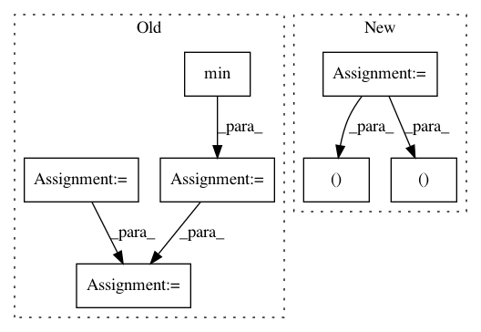

3daedc17ddab948752f3d6b90e56b177ea77ec42,nilearn/mass_univariate/permuted_least_squares.py,,permuted_ols,#Any#Any#Any#Any#Any#Any#Any#,252
Before Change
intercept_test=intercept_test, random_state=0)
for n_perm_chunk in n_perm_chunks)
// reduce results
h0_fmax = np.sort(np.ravel(np.concatenate(ret)))
// convert scores into negative log10 p-values
// TODO: to speed this up, we could threshold scores_original_data
n_scores = n_descriptors * n_regressors
ravelized_scores = np.ravel(scores_original_data)
ret = joblib.Parallel(n_jobs=n_jobs)(joblib.delayed(_convert_to_pvalues)
(h0_fmax, ravelized_scores[chunk])
for chunk in gen_even_slices(
n_scores + 1, min(n_scores, n_jobs)))
pvals = np.concatenate(ret).reshape((n_regressors, n_descriptors))
return pvals, scores_original_data, h0_fmax
After Change
intercept_test=intercept_test, random_state=0)
for n_perm_chunk in n_perm_chunks)
// reduce results
scores_as_ranks_parts, h0_fmax_parts = zip(*ret)
h0_fmax = np.hstack((h0_fmax_parts))
scores_as_ranks = np.zeros((n_regressors, n_descriptors))
for scores_as_ranks_part in scores_as_ranks_parts:
scores_as_ranks += scores_as_ranks_part
// convert ranks into p-values
pvals = (n_perm + 1 - scores_as_ranks) / float(1 + n_perm)
return - np.log10(pvals), scores_original_data, h0_fmax[0]
In pattern: SUPERPATTERN
Frequency: 3
Non-data size: 7
Instances
Project Name: nilearn/nilearn
Commit Name: 3daedc17ddab948752f3d6b90e56b177ea77ec42
Time: 2014-02-26
Author: virgile.fritsch@gmail.com
File Name: nilearn/mass_univariate/permuted_least_squares.py
Class Name:
Method Name: permuted_ols
Project Name: flow-project/flow
Commit Name: 6a98de289a02db6bd0c715affac9242a52c633e3
Time: 2019-06-10
Author: akreidieh@gmail.com
File Name: flow/visualize/time_space_diagram.py
Class Name:
Method Name: get_time_space_data
Project Name: rtavenar/tslearn
Commit Name: c68ec2e70731f601f630eb1816c51d7ee4ef0853
Time: 2018-08-10
Author: guillaume.androz@gmail.com
File Name: tslearn/preprocessing.py
Class Name: TimeSeriesScalerMinMax
Method Name: fit_transform